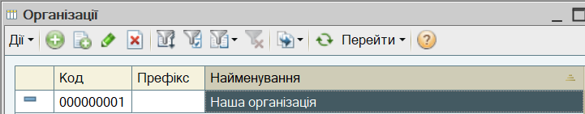
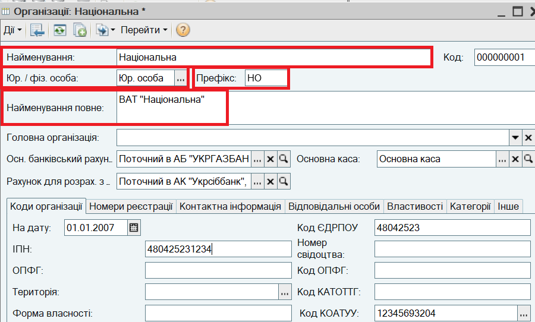
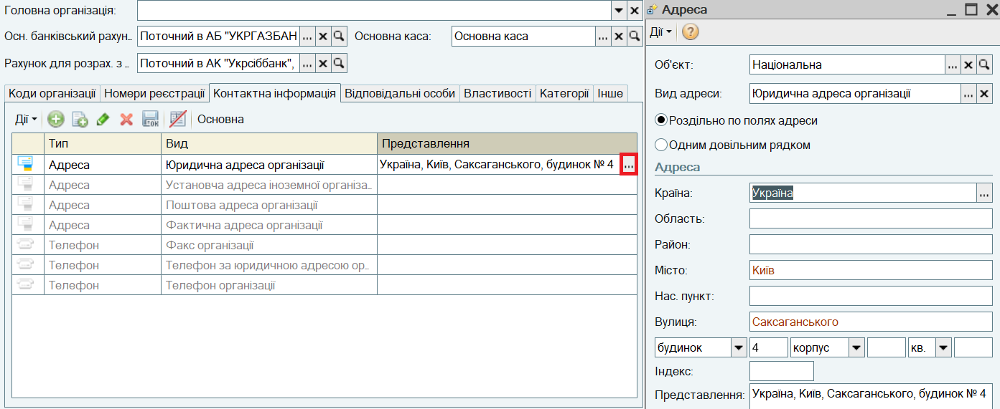
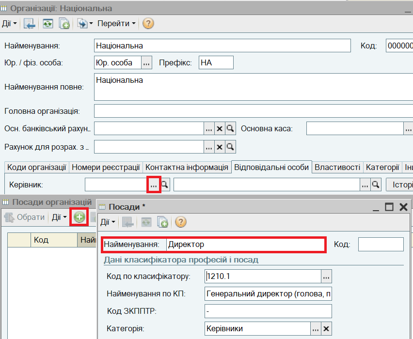
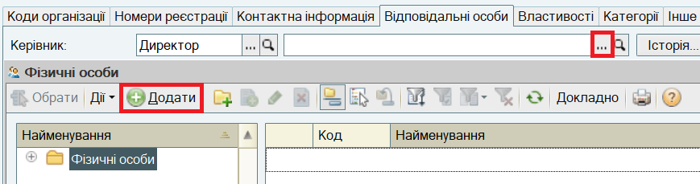
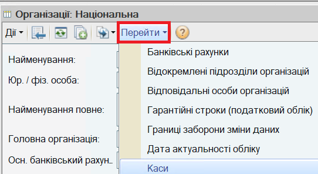
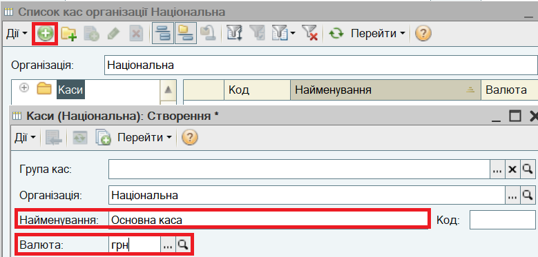

або виберіть пункт меню Дії — Змінити в командній панелі форми списку).
або виберіть пункт меню Дії — Змінити в командній панелі форми списку). Торгове підприємство може складатися з декількох організацій. Організації, що входять до складу торговельного підприємства, можуть бути як юридичними, так і фізичними особами (ФОПами). Інформація про організації, що входять до складу торгового підприємства, заповнюється в довіднику "Організації".
1. Відкрийте список Організації. Для цього в меню Довідники виберіть пункт Підприємство, а потім пункт підменю Організації. У списку вже міститься одна організація з назвою "Наша організація".

2. Відкрийте форму для введення основних відомостей про організацію підприємства.
Для цього кликніть двічі по рядку "Наша організація" (або натисніть кнопку або виберіть пункт меню Дії — Змінити в командній панелі форми списку).
3. У вікні, що відкрилося, заповніть відомості про організацію:

Натисніть на кнопку Записати для збереження відомостей про організацію.
4. Введіть інформацію про юридичну адресу організації. Для цього в цьому ж вікні перейдіть на закладку Контактна інформація. Відкрийте спеціальне діалогове вікно і заповніть у ньому адресу.

5. Натисніть на кнопку ОК в діалоговому вікні Адреса. Юридичну адресу буде введено в форму організації. Ця адреса буде використовуватися при друку документів.
6. Введіть інформацію про відповідальних осіб організації (директор, головний бухгалтер, касир, кадровик). Для цього перейдіть на закладку Відповідальні особи. Натисніть на ліву кнопку  , відкриється довідник "Посади".
, відкриється довідник "Посади".
Для введення відомостей про посаду керівника згідно штатного розкладу натисніть кнопку  або виберіть пункт меню Дії — Додати в командній панелі форми списку Посади.У вікні, що відкрилося, заповніть відомості про посаду.
або виберіть пункт меню Дії — Додати в командній панелі форми списку Посади.У вікні, що відкрилося, заповніть відомості про посаду.

7. Аналогічним чином вводиться інформація про директора у довідник "Фізичні особи". У формі Особисті дані фізичної особи заповнюється Ім'я.

8. Аналогічним чином заповнюються ПІБ та посади згідно штатного розкладу головного бухгалтера, касира і кадровика.
Важливо. Інформація про відповідальних осіб організації використовується при друку документів. Інформація про відповідальних осіб може періодично оновлюватися. За допомогою кнопки Історія можна, наприклад, подивитися список усіх осіб, які були в організації головними бухгалтерами протягом року.
9. Натисніть на кнопку Записати в нижній частині форми Організація для збереження відомостей про організацію.
10. Створіть Касу організації. Для цього натисніть кнопку Перейти - Каси:

11. В списку Каси, що відкрився, додайте "Основну касу" організації:

12. Натисніть на кнопку ОК в формі Каса для збереження відомостей про касу і закриття форми.
13. Натисніть на кнопку ОК в формі Організація для збереження відомостей про організацію і закриття форми.